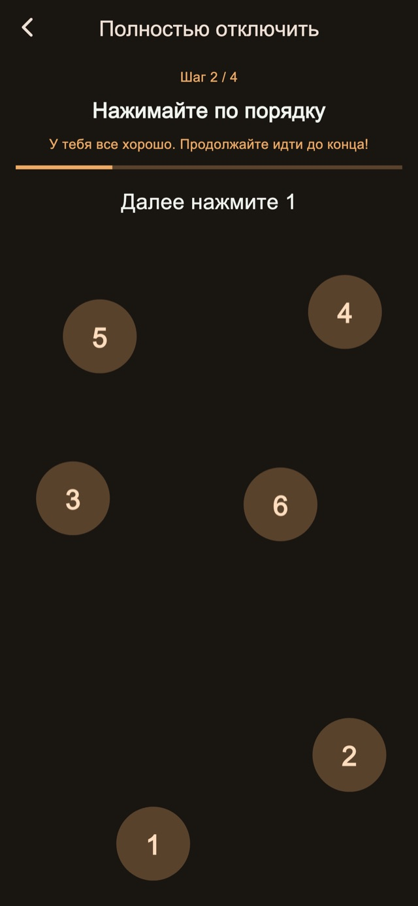
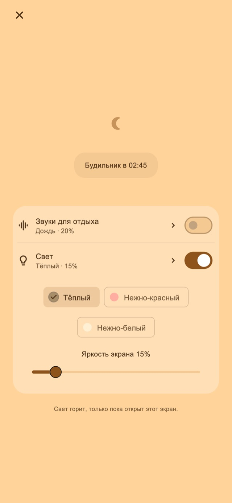

Звуки для отдыха
Слушайте дождь, волны или белый шум. Звук начинается только после вашего включения и плавно затихает к первому сигналу.
Вибробудильник для короткого сна и после укладывания ребёнка
Для тех, кто засыпает надолго во время короткого отдыха или укладывая ребёнка.
01Рисунки вибрации
Меняются длительность и ритм — вибрация отличается от привычных уведомлений. Это непривычное ощущение задумано как повод заметить будильник и проснуться.
Короткие импульсы, длинные и частые серии. Четыре базовых режима: случайный, в стиле уведомлений, преимущественно длинный и преимущественно короткий. Длительность и интервалы меняются. Попробуйте вибрацию до установки будильника.
Рисунки вибрации
02Несколько сигналов
Можно остановить только текущий сигнал или завершить серию, отменив оставшиеся.
Сохранение количества и интервала — функция Премиум.
Несколько сигналов
Завершите серию после подъёма
03Задания для остановки
Примеры, нажатие чисел по порядку, удержание и повторные нажатия сопровождают остановку и откладывание. Стандартные шаги доступны бесплатно. Их редактирование и комбинирование — функция Premium.

Ночной экран
Настройте яркость и вид часов. Можно скрывать изображение после небольшого периода бездействия и возвращать часы и кнопки касанием.
Выберите длительность, например 30 минут, или время подъёма.
Оставьте ночной экран открытым; звук и свет включите по желанию.
Выполните шаги остановки и завершите серию, когда встанете.
Расслабляющие звуки и свет
Для короткого сна или укладывания ребёнка. Включайте их на ночном экране по необходимости.
Слушайте дождь, волны или белый шум. Звук начинается только после вашего включения и плавно затихает к первому сигналу.
Выберите тёплый, бледно-красный или мягкий белый свет и настройте яркость.
Базовые функции бесплатны

Бесплатно / Premium
Четыре режима вибрации, стандартная остановка и откладывание, ночной экран, звуки и свет включены. На некоторых экранах есть реклама.
| Функция | Бесплатно | Premium |
|---|---|---|
| Рисунки вибрации | ✓ | ✓ |
| Несколько сигналов | Стандартные настройки | Настраивается |
| Задания для остановки | Стандартные настройки | Настраивается |
| Ночной экран / Звуки для отдыха / Свет | ✓ | ✓ |
| Создавайте и меняйте свои вибрации. | — | ✓ |
| Уберите всю рекламу. | — | ✓ |
Можно выбрать месячную подписку или разовую покупку. Подписка продлевается автоматически; управлять ею и отменить её можно в настройках аккаунта магазина. Цены и условия указаны перед покупкой.
Вопросы и ответы
Для собственных вибраций приложения после настройки будильника оставьте ночной экран открытым. При блокировке боковой кнопкой или переходе в другое приложение вибрацией управляет iOS: выбранные ритм и сила не применяются. Проверьте разрешения, настройки вибрации и выполните проверку работы.
Слушайте дождь, волны или белый шум. Звук начинается только после вашего включения и плавно затихает к первому сигналу. Выберите тёплый, бледно-красный или мягкий белый свет и настройте яркость.
Четыре режима вибрации, стандартная остановка и откладывание, ночной экран, звуки и свет включены. На некоторых экранах есть реклама. Уберите всю рекламу. Изменяйте количество сигналов и интервал. Редактируйте шаги остановки и откладывания. Создавайте и меняйте свои вибрации. Можно выбрать месячную подписку или разовую покупку. Подписка продлевается автоматически; управлять ею и отменить её можно в настройках аккаунта магазина. Цены и условия указаны перед покупкой.
Скачать
Вибробудильник для короткого сна и после укладывания ребёнка
Базовые функции бесплатны
iPhone: iOS 26.1+ / Android: 8.0+